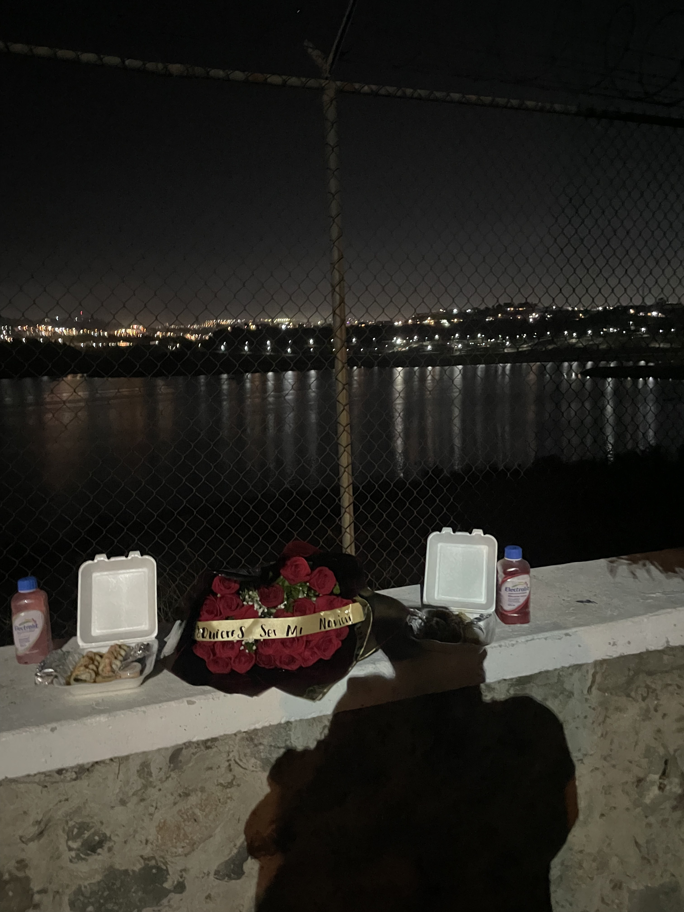
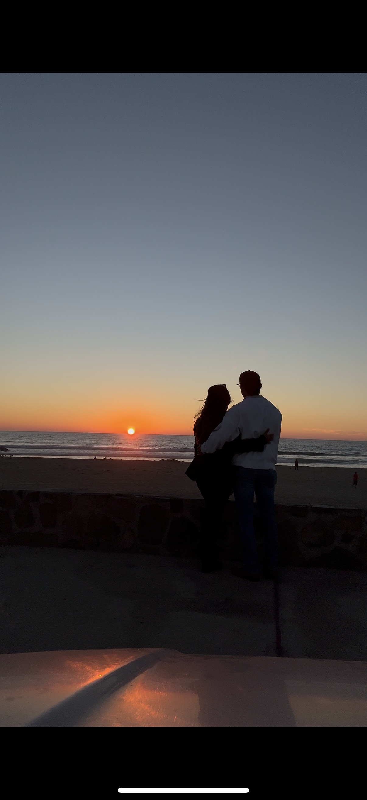
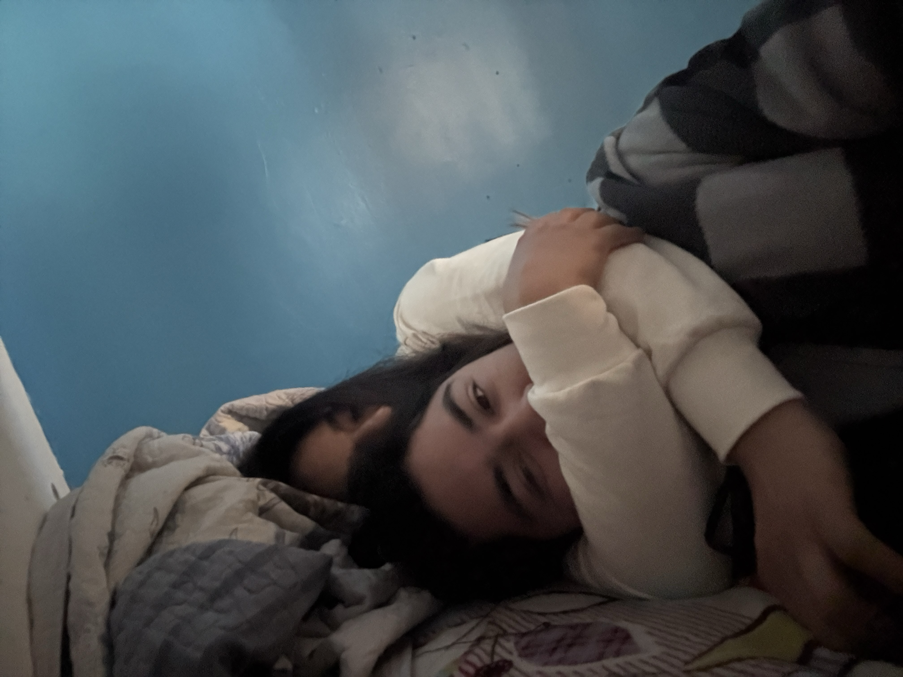
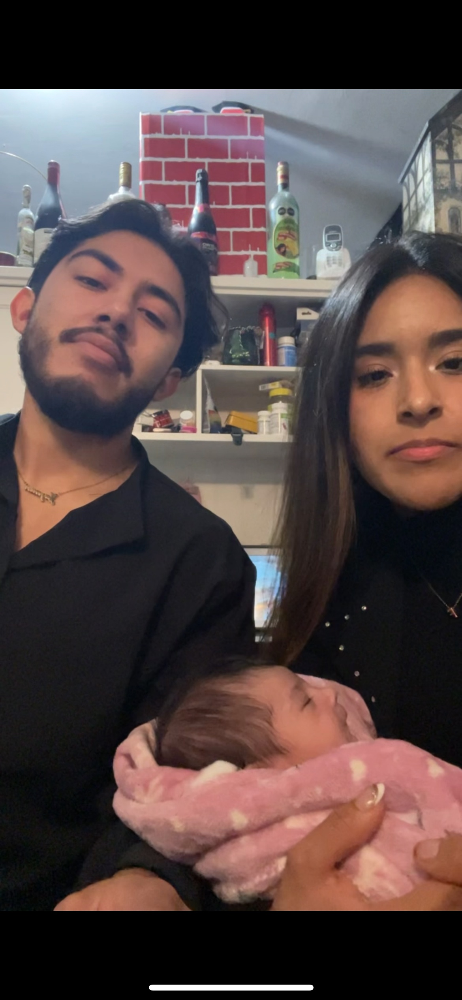
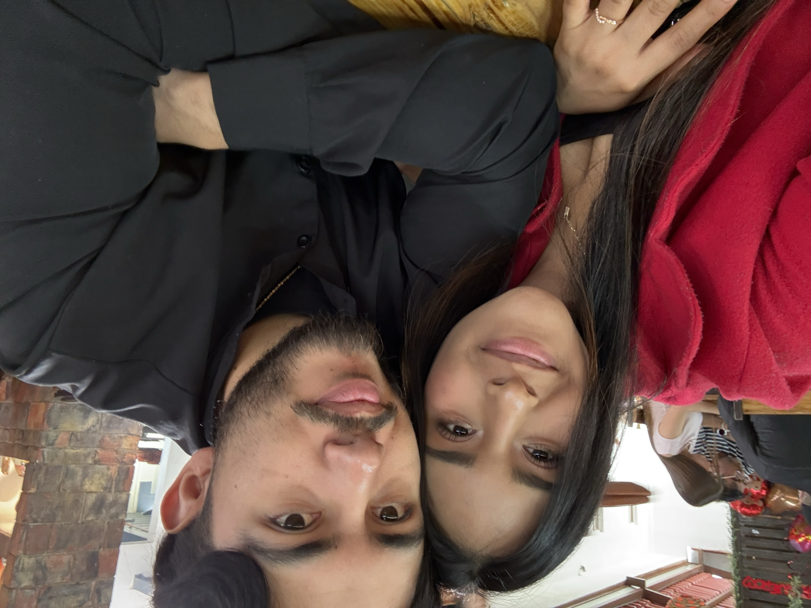
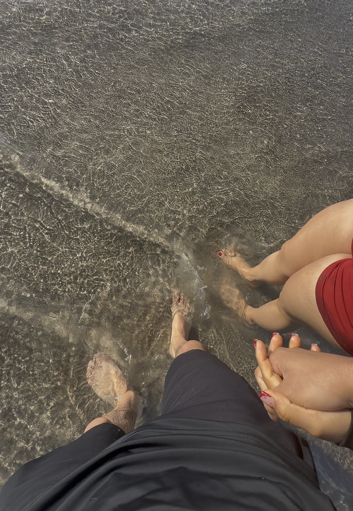

Por último... ❤️
Hay algo que quiero decirte...
Para el amor de mi vida ❤️

Mi amor...
Quiero comenzar diciéndote algo que probablemente ya sabes, pero que nunca me voy a cansar de repetir: te amo.
Y aunque unas cuantas palabras nunca podrían explicar todo lo que siento, quiero intentar dejar aquí un pequeño pedacito de mi corazón.

Un momento que siempre voy a guardar en mi corazón. ❤️

Porque contigo hasta los momentos más sencillos se vuelven especiales.
Desde que llegaste a mi vida, muchas cosas cambiaron.
Aprendí que no necesito un momento perfecto para ser feliz. Muchas veces basta con estar contigo, escucharte, reírnos juntos o simplemente saber que estás ahí.


Otro recuerdo de tantos que todavía nos quedan por crear. ❤️
Me encanta tu forma de ser, tus ocurrencias, tu manera de hacerme sonreír y cada pequeño detalle que te hace ser tú.
No quiero solamente recordar lo que ya hemos vivido. Quiero seguir creando recuerdos contigo.


Quiero que algún día podamos mirar todas estas fotografías y recordar cuánto hemos crecido juntos.
Que podamos decir: "Mira todo lo que hemos vivido".

Y este es solamente otro capítulo de nuestra historia. ❤️

No sé exactamente qué nos espera en el futuro.
Pero sí sé algo: quiero descubrirlo contigo.
Quiero más risas, más abrazos, más fotografías, más aventuras, más momentos inesperados y, sobre todo, más tiempo a tu lado.


Y después de todas estas preguntas, de todas estas fotografías y de todo lo que te he escrito...
Te elegiría una y otra vez. ❤️
Hoy, mañana y todos los días que la vida nos permita compartir.
Con todo mi amor,
Francisco ❤️
Para ti, mi amor ❤️
Hola mi amorcito 😚
Hoy cumplimos 11 meses de novios 🥹, ya casi nuestro primer aniversario 🥰. Hemos pasado por muchas cosas, muchas dificultades y diferentes procesos, y he estado para ti desde el primer momento en que te vi y lo sigo estando.
Cada momento contigo es muy especial para mí y me llena de felicidad 🥹💘. No importa si estamos teniendo un día perfecto o si las cosas no están saliendo como queremos, tenerte en mi vida siempre va a significar muchísimo para mí.
Yo sé que en estos momentos no estamos tan bien en todos los sentidos, pero aún nos seguimos eligiendo el uno al otro.
Y quiero que me creas cuando te digo que este amor que siento por ti es de lo más puro y sincero que pueda existir. Yo quiero pasar hasta mi último respiro a tu lado, mi amor 💖.
Sé que he cometido muchos errores durante el transcurso de nuestra relación. Me he equivocado y a veces te he fallado, y sé que hubo momentos en los que mis acciones te hicieron sentir mal.
Pero eso no significa que no te ame, ni que solamente quiera jugar contigo, porque no es así 😞.
Solo soy un hombre lleno de errores que está aprendiendo a amarte como tú quieres y como tú mereces.
A veces me confío de todo el amor que te tengo, porque para mí es algo tan grande y tan seguro dentro de mi corazón que se me olvida que tú no puedes ver todo lo que siento por dentro.
Y por eso hay veces que se me olvida demostrártelo 😞.
De verdad, perdóname por eso. Perdóname por todas las veces que por mis errores, mis tonterías o mi manera de actuar te hice llorar 😞.
De verdad, lo que menos quiero en esta vida es hacerte sufrir por mi culpa.
Yo solamente trato de hacerte feliz, aunque a veces falle. A veces se me olvida que no tengo que hacer todo perfecto para hacerte feliz, sino simplemente demostrarte lo mucho que te amo.
Demostrarte que quiero estar contigo, demostrarte que quiero mejorar y demostrarte que quiero triunfar contigo 🥺.
Porque yo no quiero solamente compartir contigo los momentos bonitos. También quiero estar cuando las cosas se pongan difíciles, cuando tengamos que aprender, cuando tengamos que cambiar y cuando tengamos que volver a elegirnos.
Yo solo le pido a Dios que me dé vida para estar contigo y, de verdad, quiero que seas tú 🥺.
Quiero que seas tú con quien pueda seguir creando recuerdos, viviendo experiencias, riéndome, aprendiendo y creciendo.
Te deseo toda la felicidad del mundo porque es lo mínimo que te mereces.
Eres una gran mujer, hermosa, inteligente, con un cuerpazo que ufff 😏❤️, y eres perfecta a mis ojos, de verdad 🥹💖.
Pero más allá de todo eso, amo la persona que eres. Amo tus ocurrencias, tu forma de ser, tu manera de hacerme sentir y todos esos pequeños detalles que hacen que seas tú.
Solo espero que me sigas teniendo paciencia y que me sigas queriendo en tu vida ❤️🩹.
Yo también quiero seguir aprendiendo, seguir mejorando y seguir haciendo todo lo posible para que algún día pueda mirar atrás y saber que todo lo que vivimos valió la pena.
No quiero prometerte que nunca voy a equivocarme, porque sé que soy humano y puedo cometer errores.
Pero sí quiero prometerte que voy a seguir intentando, que voy a aprender de mis errores y que nunca voy a dejar de valorar el lugar que tienes en mi vida.
Te amo demasiado, mi compañera de vida 💖.
Gracias por estos 11 meses, por cada momento, cada sonrisa, cada abrazo, cada recuerdo y también por cada dificultad que nos ha enseñado algo.
Gracias por seguir aquí, por seguir eligiéndome y por permitirme seguir compartiendo mi vida contigo.
Espero que esta historia apenas esté comenzando y que todavía nos queden muchísimos capítulos por escribir juntos.
Porque si me preguntaran una vez más si quiero estar contigo, mi respuesta seguiría siendo la misma...
Sí. Te elegiría a ti. ❤️
Hoy, mañana y mientras la vida nos permita seguir caminando juntos.
FELICES 11 MESES Y CONTANDO... 💖
Te amo demasiado, mi amorcito. ❤️
Tu hombrecito 💖